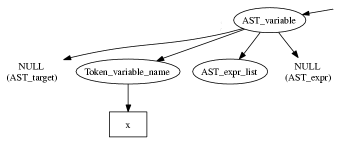
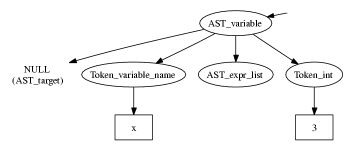
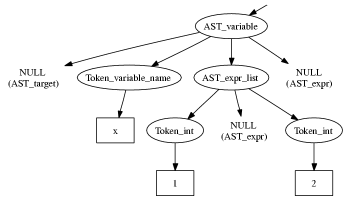
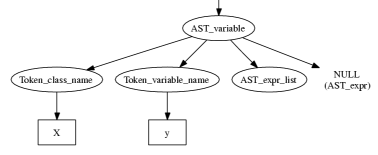

| Home | Downloads | Documentation | Plugins | Spinoff Projects | Mailing List | ||||||||
Representing PHPMost PHP constructs can immediately be represented in terms of the phc abstract grammar. There are a few constructs that present some difficulties. This document describes how these difficulties are resolved, and it explains some of the more difficult rules in the grammar.Top Level Grammar StructureThe major difference between our abstract grammar for PHP and the “official” grammar (distributed in source code format with the PHP distribution) is the top-level structure. Stripped-down, the top-level of the PHP grammar looks something likephp_script ::= statement* statement ::= class_def | method | if | while | ... other statements ... method ::= statement* class_def ::= member* member ::= method | attributeCompare this to the top-level grammar structure that we have adopted: php_script ::= class_def+ class_def ::= member* member ::= method | attribute method ::= statement* statement ::= if | while | ... other statements ... (This shows essentials only; see the grammar for the details). This mismatch has two consequences. The first is that PHP allows
scripts have methods that do not belong to any class, and statements
that do not belong to any method. phc
introduces a special class called
<?php
function hello()
{
echo "Hello world!";
}
hello();
?>
gets represented as
<?php
class %MAIN%
{
static function hello()
{
%STDLIB%::echo("Hello world!");
}
static function %run%()
{
%MAIN%::hello();
}
}
?>
The second consequence is that PHP allows scripts to have function
definitions inside other function definitions (or inside
Method
|
target? |
Just like function calls, variables can have a target, and just as
for function calls, this target can be an expression (for an
object, e.g., $x->y) or a class name (for a static
class attribute, e.g. FOO::$y). Unlike function calls
however, in variables the target is optional (indicated by the
question mark). If no target is specified, the variable refers to a
local variable in a method (see Global
Variables for information on how we deal with the
global statement).
|
variable_name |
Again, as for function calls, the name of the variable may be a
literal VARIABLE_NAME ($x), or be given
by an expression (which is wrapped up in an
AST_reflection node). The latter possibility is
referred to as “variable variables” in the PHP manual.
For example, $$x is the variable whose name is
currently stored in (another) variable called $x.
|
array_indices:(expr?)* |
A variable may have one or more array indices, for example
$x[3][5]. The strange construct (expr?)*
means: a list of (*) optional (?)
expressions. For example, $x[4][] is a list of two
expressions, but the second expression is not given. In PHP, this
means “use the next available index”.
|
string_index:expr? |
Finally, a variable may contain one string index ($x{5})
that accesses an individual character from a string.
|
We illustrate the various possibilities using diagrams:
$x  x, not $x
$x{3} 
$x[1][][2]  X::$y  y, not
$y. The fact that you must write $x->y but
X::$y in PHP disappears in the abstract syntax.
$$x $x->y $x->$y A number of nodes in the AST are dedicated “commented
nodes”. Their corresponding C++ classes inherit from
AST_commented_node, which introduces a
List<String*>* attribute called
comments. The commented nodes are class members
(AST_member), statements (AST_statement),
interface and class definitions (AST_interface_def,
AST_class_def), switch cases
(AST_switch_case) and catches (AST_catch).
When the parser encounters a comment in the input, it attaches it
either to the previous node in the AST, or to the next, according to a
variable attach_to_previous. This variable is set as
follows:
false at the start of each line
true after seeing a semicolon, or either of the keywords class or function
Thus, in
foo(); // Comment bar();
the comment gets attached to bar(); (to be precise,
to the corresponding AST_eval_expr node; the function
call itself is an expression and phc does
not associate comments with expressions), but in
foo(); // Comment bar();
the comment gets attached to foo(); instead. The same
applies to multiple comments:
foo(); /* A */ /* B */ // C // D bar();
In this snippet, A and B get attached to
foo();, but C and D get
attached to bar();. Also, in the following snippet,
// Comment echo /* one */ 1 + /* two */ 2;
all comments get attached to the same node. This should work most of the time, if not all the time. In particular, it should never loose any comments. If something goes wrong with comments, please send us a sample program that shows where it goes wrong. Note that whitespace in multi-line comments gets dealt with in a less than satisfactory way; see limitations for details for details.
Double quoted strings and those written using the HEREDOC syntax are treated specially by PHP: it parses variables used inside these strings and automatically expands them with their value. phc handles both the simple and complex syntax defined by PHP for variables in strings. We transform a string like
"Total cost is: $total (includes shipping of $shipping)"
into:
"Total cost is: " . $total . " (includes shipping of " . $shipping . ")"
which is represented in the phc abstract syntax tree by a number of strings and expressions concatenated together. Thus, as a programmer you don't need to do anything special to process variables inside strings. Any code you write for processing variables will also appropriately handle variables inside strings.
Currently, the unparser will not output strings of the first form, but will always output them in the second form (using concatenation). Future releases of phc may remedy this (alternatively, dedicated more advanced pretty-printing tools for PHP could be built on top of phc; see Spinoffs).
Global variable declarations are not explicitly recorded in the phc AST. Instead the local variable declared global is assigned a reference to the appropriate global variable, which will be a static class attribute of %MAIN% (see above description of the Top Level Grammar Structure).
For example, the following code
<?php
$x = 100;
function foobar()
{
global $x;
$x = 200;
}
foobar();
?>
is represented internally as
<?php
class %MAIN%
{
static $x = 100;
static function foobar()
{
$x =& %MAIN%::$x;
$x = 200;
}
static function %run%()
{
%MAIN%::foobar();
}
}
?>
Obviously, the phc unparser will output code using global declarations.
Note that local variables in %run% are really global
variables; for that reason, any “local” variable in
%run% get assigned a target of %MAIN% (if no
target was specified in the program).
elseifelseif.
The following PHP code
<?php
if($x)
c1();
elseif($y)
c2();
else
c3();
?>
gets interpreted as
<?php
if($x)
c1();
else
{
if($y)
c2();
else
c3();
}
?>
The higher the number of elseifs, the greater the level
of nesting. This transformation is “hidden” by the
unparser.
echo has multiple (comma separated) arguments,
they get translated into multiple function calls (echo a,
b; becomes echo a; echo b;). Fragments of inline
HTML also become arguments to a function call to echo.
use, require,
require_once, include,
include_once, isset and empty
all get translated into a function call to a function with the same
name as the keyword
exit also becomes a call to the function
exit; exit; and exit(); are
interpreted as exit(0)
var x, y;
becomes var x; var y;. A similar comment applies to
static_var
+= style of operators; a
+= 2; gets translated into a = a + 2;. It should
be possible to reverse this translation in the unparser, but this is
not currently implemented.
Finally, the phc grammar is much simpler than the official grammar, and as a consequence more general. The class of programs that are valid according to the abstract grammar is larger than the class of programs actually accepted by the PHP parser. In other words, it is possible to represent a program in the abstract syntax that does not have a valid PHP equivalent. The advantage of our grammar is that is much, much easier to work with.
To compare, consider the tree for
$g->greet("TACS");
Using the phc abstract syntax, this looks like
However, in the official PHP grammar, the tree would look like
Not only is the number of concepts used in the tree much larger
(base_variable_with_function_calls,
reference_variable, variable_property,
etc. etc.), the concepts used in the phc
tree map directly to constructs in the PHP language; that does not
hold true for the PHP tree. Moreover, the fact that this expression
is a method invocation (function call) is immediately obvious from
the root of the expression in the phc
tree; the root of the PHP tree says that the expression is a
variable, and only deeper down the tree does it become apparent
that the expression is in fact a function call.